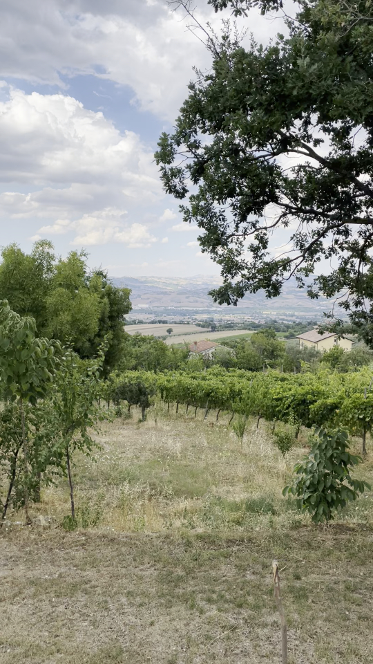

This image has an ICC profile that contains CICP data indicating that it is Rec2020 PQ. The ICC profile also provies an A2B0 lookup table that performs tone mapping. The tone mapping in the table will be improved.
This image has an ICC profile that contains CICP data indicating that it is P3 HLG. The ICC profile also provies an 1D lookup table that performs tone mapping for a reference SDR display.
